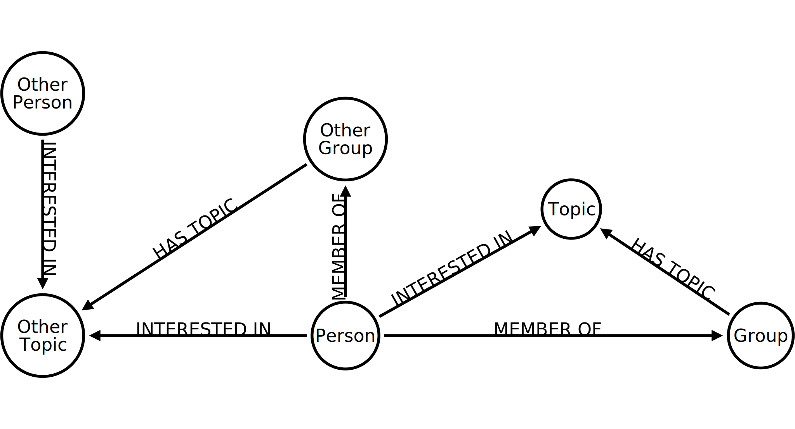

Building Neo4j backed web applications
25th June 2014
Schedule
Tweet the Meetup
#neo4j
@markHneedham@structr |
Analysing London's NoSQL meetups
Mark Needham @markhneedham

Expose data via APIs
Very graphy data
Meetup API
The Meetup Graph
The Meetup Graph
Why Clojure?
Not a great name
Where does Neocons go?
Importing the data
Takes a few minutes to import everything
Let's talk about the impedance mismatch
This is how we're taught to design our code.
Let's talk about the impedance mismatch
Relational DB make a poor technology for expressing the domain because you have to deal with foreign key meta data.
i.e. INNER JOIN, LEFT JOIN, OUTER JOIN
Let's talk about the impedance mismatch
We do all the hard work in the object model due to this impedance mismatch.
Express the application but not the data structure
Relational DB make a poor technology for expressing the domain because you have to deal with foreign key meta data
e.g. left inner join, left outer join
Graph DB gives us better tools for expressing the problem domain
We moved stuff out of the database because it was unpleasant to deal with. We now have the option of slimming down that layer
Querying the database
(def NEO4J_HOST "http://localhost:7474/db/data/")
(defn cypher
([query] (cypher query {}))
([query params]
(let [conn (nr/connect! NEO4J_HOST)]
(->> (cy/tquery query params)
walk/keywordize-keys))))
src/neo4j_meetup/db.clj
Find Neo4j London Events: The Query
MATCH (event:Event)-[:HELD_AT]->(venue)
OPTIONAL MATCH (event)<-[:TO]-(rsvp)<-[:RSVPD]-(person)
OPTIONAL MATCH (rsvp)<-[:NEXT]-(initial)
WITH event, venue, COLLECT({rsvp: rsvp, initial:initial, person:person}) AS responses
WITH event, venue,
[response in responses WHERE response.initial is null AND response.rsvp.response = "yes"] AS a,
[response in responses WHERE NOT response.initial is null] AS d
RETURN event, venue,
LENGTH(a) + REDUCE(acc=0, count IN [value IN a | value.rsvp.guests] | acc + count) as attendees,
LENGTH(d) + REDUCE(acc=0, count IN [value IN d | value.rsvp.guests] | acc + count) as dropouts
Find Neo4j London Events: The Code
(defn extract-date-time [timestamp]
{ :formatted-time (timestamp/as-time timestamp)
:formatted-date (timestamp/as-date timestamp) })
(defn all-events [meetup-id]
(let [query "..."]
(->>
(db/cypher query)
(map #(merge % (extract-date-time
(+ (-> % :event :data :time) (-> % :event :data :utc_offset))))))))
src/neo4j_meetup/meetup.clj
What goes in Cypher, what goes in Clojure?
Cypher is good at |
Clojure is good at |
|---|---|
| Expressing graph patterns | Chaining functions to be applied to data |
| Exploring relationships in data | Manipulating/Massaging data |
What goes in Cypher, what goes in Clojure?
(defn home-page []
(let [now (c/to-long (clj-time.core/now))
all (meetup/all-events core/MEETUP_NAME)
{upcoming true past false } (group-by #(> (->> % :event :data :time) now) all)]
(layout/render
"home.html" {:past (sort-by time-descending past)
:upcoming (sort-by time-ascending upcoming)})))
Today's event
Today's event as one query
MATCH (event:Event {id: {eventId}})-[:HELD_AT]->(venue)
OPTIONAL MATCH (event)<-[:TO]-(rsvp)<-[:RSVPD]-(person)
OPTIONAL MATCH (person)-[:INTERESTED_IN]->(topic) WHERE ()-[:HAS_TOPIC]->(topic)
WITH event, venue, rsvp, person, COLLECT(topic) as topics ORDER BY rsvp.time
OPTIONAL MATCH (rsvp)<-[:NEXT]-(initial)
WITH event, venue, COLLECT({rsvp: rsvp, initial: initial, person: person, topics: topics}) AS responses
WITH event, venue,
[response in responses WHERE response.initial is null AND response.rsvp.response = "yes"] as attendees,
[response in responses WHERE NOT response.initial is null] as dropouts, responses
UNWIND([response in attendees | response.topics]) AS topics
UNWIND(topics) AS topic
WITH event, venue, attendees, dropouts, {id: topic.id, name:topic.name, freq:COUNT(*)} AS t
RETURN event, venue, attendees, dropouts, COLLECT(t) AS topics
Split into two queries
MATCH (event:Event {id: {eventId}})-[:HELD_AT]->(venue)
OPTIONAL MATCH (event)<-[:TO]-(rsvp)<-[:RSVPD]-(person)
WITH event, venue, rsvp, person ORDER BY rsvp.time
OPTIONAL MATCH (rsvp)<-[:NEXT]-(initial)
WITH event, venue, COLLECT({rsvp: rsvp, initial: initial, person: person}) AS responses
WITH event, venue,
[response in responses WHERE response.initial is null
AND response.rsvp.response = "yes"] as attendees,
[response in responses WHERE NOT response.initial is null] as dropouts
RETURN event, venue, attendees, dropouts
MATCH (event:Event {id: {eventId}})
MATCH (event)<-[:TO]-(rsvp {response: "yes"})<-[:RSVPD]-(person)-[:INTERESTED_IN]->(topic)
WHERE ()-[:HAS_TOPIC]->(topic)
RETURN topic.id AS id, topic.name AS name, COUNT(*) AS freq
rendering via hiccup
adjacency lists
A meetup recommendation engine

Get the codez